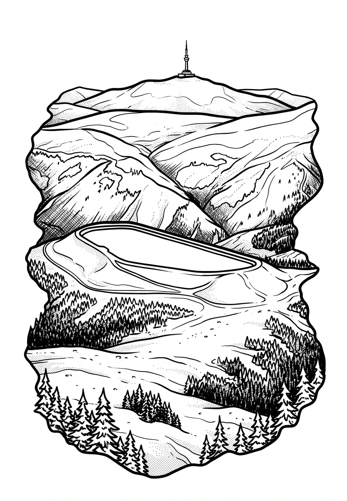

Přečerpávací elektrárna Dlouhé stráně
Olomoucký kraj · 1350 m n. m.

technická památka · #053
Přečerpávací vodní elektrárna Dlouhé stráně je přečerpávací vodní elektrárnou společnosti ČEZ vybudovanou v Hrubém Jeseníku v katastrálním území Rejhotice obce Loučná nad Desnou v okrese Šumperk, uvnitř CHKO Jeseníky. Jedná se o nejvýkonnější vodní elektrárnu v Česku s instalovaným výkonem 650 MW a kapacitou uskladnění energie 3,7 GWh.